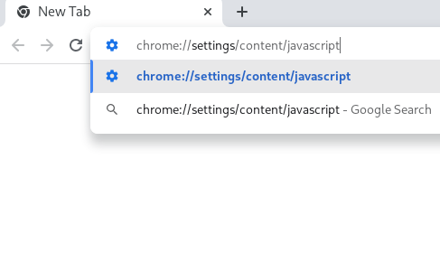
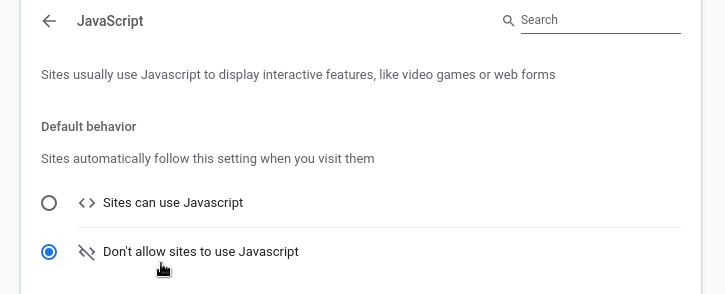

Firefox
Firefox Chromium
Chromium uBlock Origin
uBlock Origin Disabling JavaScript in Chromium
Disabling JavaScript in Chromium
- In the address bar, type
chrome://settings/content/javascriptand press enter.
 - Click "Don't allow sites to use Javascript".

Disabling JavaScript in Chromiumchrome://settings/content/javascript and press enter.